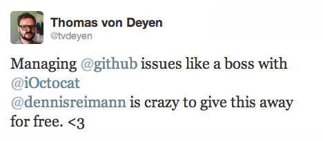

Lessons Learned From
Changing iOctocat's Pricing Model
CocoaHeads Bremen - December 16th 2013
Dennis Reimann - @dennisreimann
Details in WWDC 2013, Session 308
// IOCAppDelegate.m
- (void)setupStore {
self.receiptVerificator = [[RMStoreAppReceiptVerificator alloc] init];
self.receiptVerificator.bundleIdentifier = IOCStoreBundleIdentifier;
self.receiptVerificator.bundleVersion = IOCStoreBundleVersion;
[RMStore defaultStore].receiptVerificator = self.receiptVerificator;
[self setNeedsProVersionCheck];
}
- (void)setNeedsProVersionCheck {
self.proVersionStatus = IOCProVersionStatusUndef;
}
// IOCAppDelegate.m
- (void)verifyReceipt {
if (![self.receiptVerificator verifyAppReceipt]) {
[[RMStore defaultStore] refreshReceiptOnSuccess:^{
[self setNeedsProVersionCheck];
} failure:NULL];
}
}
// IOCAppDelegate.m
- (BOOL)application:(UIApplication *)application didFinishLaunchingWithOptions:(NSDictionary *)launchOptions {
// ...
[self setupStore];
[self verifyReceipt];
// ...
}
// IOCAppDelegate.m
- (BOOL)isProVersion {
if (self.proVersionStatus == IOCProVersionStatusUndef) {
RMAppReceipt *r = [RMAppReceipt bundleReceipt];
// see if it has been bought prior to the freemium switch,
// otherwise check for the pro upgrade purchase
BOOL boughtBeforeSwitch =
[IOCUtil versionBoughtBeforeSwitch:r.originalAppVersion];
BOOL boughtProUpgrade =
[r containsInAppPurchaseOfProductIdentifier:IOCProIdentifier];
self.proVersionStatus = boughtBeforeSwitch || boughtProUpgrade ?
IOCProVersionStatusTrue : IOCProVersionStatusFalse;
}
return self.proVersionStatus;
}
// IOCUpgradeController.m
- (IBAction)purchaseUpgrade:(id)sender {
[[RMStore defaultStore] addPayment:IOCStoreProUpgradeIdentifier success:^(SKPaymentTransaction *transaction) {
[[iOctocat sharedInstance] setNeedsProVersionCheck];
[self handleUpgradeSuccess];
} failure:^(SKPaymentTransaction *transaction, NSError *error) {
[self alertError:error.localizedDescription];
}];
}
// IOCUpgradeController.m
- (IBAction)restorePurchase:(id)sender {
[[RMStore defaultStore] restoreTransactionsOnSuccess:^{
[[iOctocat sharedInstance] setNeedsProVersionCheck];
if ([iOctocat sharedInstance].isProVersion) {
[self handleUpgradeSuccess];
} else {
[self alertError:NSLocalizedString(@"You have not purchased iOctocat Pro with the given Apple ID, yet.", nil)];
}
} failure:^(NSError *error) {
[self alertError:error.localizedDescription];
}];
}
// Any ViewController with Upgrade references
- (void)viewDidLoad {
[super viewDidLoad];
[[RMStore defaultStore] addStoreObserver:self];
[self updateViewDependingOnProVersionStatusAnimated:NO];
}
- (void)updateViewDependingOnProVersionStatusAnimated:(BOOL)animated {
UIBarButtonItem *item = nil;
if (![IOCAppDelegate sharedInstance].isProVersion) {
item = [[UIBarButtonItem alloc] initWithTitle:@"Upgrade" ...];
}
[self.navigationItem setRightBarButtonItem:item animated:animated];
}
// Any ViewController with Upgrade references
- (void)storeRefreshReceiptFinished:(NSNotification*)notification {
[self updateViewDependingOnProVersionStatusAnimated:YES];
}
- (void)storePaymentTransactionFinished:(NSNotification*)notification {
[self updateViewDependingOnProVersionStatusAnimated:YES];
}
- (void)storeRestoreTransactionsFinished:(NSNotification *)notification {
[self updateViewDependingOnProVersionStatusAnimated:YES];
}
266 paid sales/downloads 1397 EUR revenue
217 paid sales 1110 EUR revenue
6261 downloads
Right now missing out on potential customers
